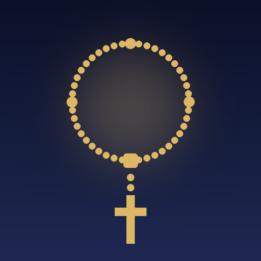

Rosary Chapel
Pray the Rosary together
Pray the Holy Rosary the way it is prayed in a parish: a leader begins each prayer and the congregation answers together, in natural, human-sounding voices. In English and Spanish.
One-off purchase · £2.99 · No ads, no subscriptions
Pray together, wherever you are
A real congregation
A leader and a congregation that responds in unison, just like the Rosary after Mass.
Your setting
Quiet Personal Prayer, Parish Rosary or Cathedral Rosary, each with its own sound.
Words that follow along
Each phrase is highlighted as it is spoken, so you never lose your place.
In English and Spanish
Reza el Rosario en español
Every prayer, voice and screen comes in English and Spanish, each language with its own leaders and congregation. Switch language at any time in Settings.
Every mystery, beautifully presented
- Today's mysteries chosen for you
- Scripture and a short reflection for each mystery
- The fruit of the mystery and an intention
- A quiet, choir-backed pause to reflect
- Rosary beads that follow you bead by bead
- A pause to mark the end of each decade
More devotions
- Divine Mercy Chaplet
- The Angelus and Regina Caeli
- Litany of Loreto
- Prayer to St Michael
- Stations of the Cross
- Daily reminders, the Angelus and the 3 pm Hour of Mercy
Private by design
Works fully offline. No account, no ads and no tracking. Your intentions and prayer history never leave your phone. Read the privacy policy.